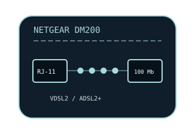

[ MODEL-SPECIFIC NETWORK HARDWARE ]
NETGEAR DM200 VDSL2/ADSL2+ Modem
Multimode copper DSL modem/bridge supporting VDSL2 and ADSL-family service, with a 10/100 Ethernet host connection.

EXACT MODEL / SKU: NETGEAR DM200 (North American DM200-100NAS family). Match the label, region and hardware revision; do not infer VDSL profile from the model name alone.
Exact specifications and compatibility
| Model / SKU | NETGEAR DM200; North American retail model DM200-100NAS. |
|---|---|
| Modem standard | VDSL/VDSL2 and ADSL, ADSL2 and ADSL2+ multimode copper DSL; supported Annex and profiles depend on region, DSLAM and firmware. |
| Interfaces | 1 × RJ-11 DSL line port; 1 × 10/100BASE-T RJ-45 Ethernet port. Fast Ethernet caps the host-side link at 100Mb/s. |
| Downstream / upstream | NETGEAR lists VDSL2 capability up to 100Mb/s; supported VDSL2 profiles can provide up to 100Mb/s in either direction. ADSL2+ offers up to 24Mb/s downstream, with upstream bounded by Annex/profile. Actual synchronization depends on the provider and loop. |
| Telephone service | DSL line interface only; no telephone handset port, voice gateway or VoIP. Use a compatible splitter/filter if POTS voice shares the line. |
| Provider compatibility | Requires an active copper DSL circuit whose Annex, modulation/profile, VLAN and authentication method match the ISP. Confirm compatibility before ordering; it is not a cable modem, fiber ONT or universal DSL replacement. |
| Firmware / host compatibility | NETGEAR support supplies model firmware and setup resources; use the correct region and hardware revision. Ethernet works without a dedicated PC modem driver; ISP login and service configuration remain necessary. |
| Power and safety | 12V DC, 1A adapter. Use the supplied/rated adapter, keep the indoor device ventilated and dry, avoid damaged telephone wiring, and disconnect power before cleaning. |
Model-specific notes
The 10/100 Ethernet port—not the VDSL2 signaling ceiling—sets a maximum wired LAN link of 100Mb/s. Line quality and ISP profile can reduce DSL sync further.
Manufacturer specifications and manual
- NETGEAR DM200 official data sheetManufacturer specification source for DSL modes, port interface, rated capability and power.
- NETGEAR DM200 support and downloadsModel-specific manufacturer support portal for manuals, setup and firmware resources.